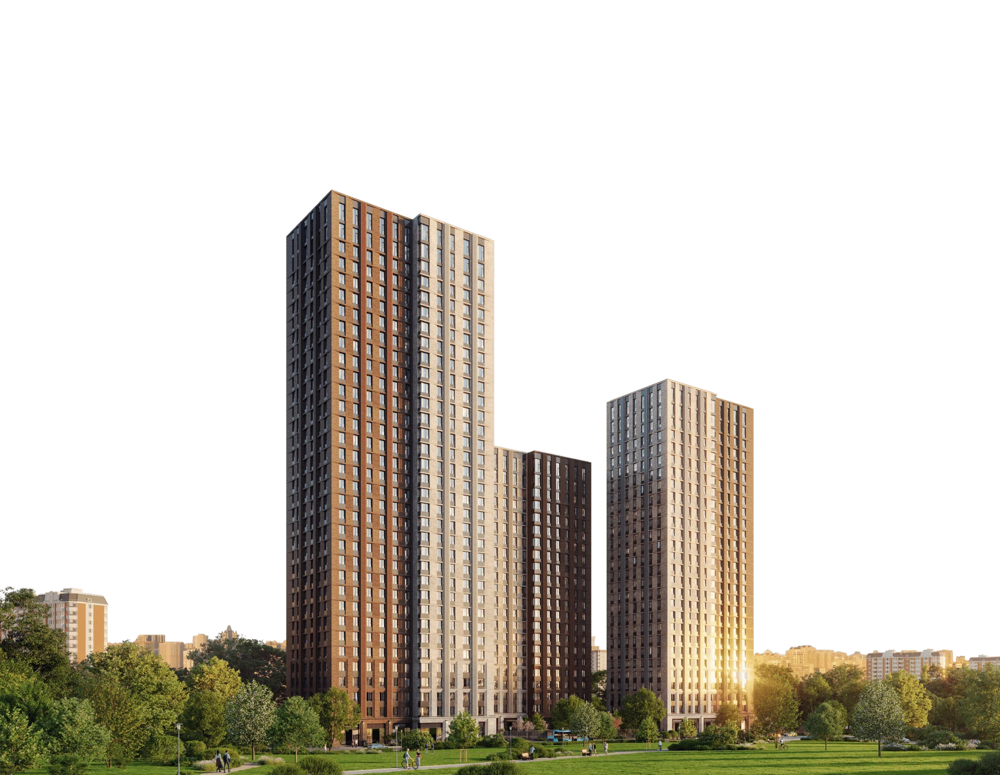

СЗ Градиент
выбрать квартиру
О проекте
Локация
Планировки
Преимущества
О городе
связаться
+7 978 052 00 08

Комплекс видовых квартир в городе Керчь
Жемчужина
Керчи
Выбрать квартиру
Характеристики дома
Ваш идеальный дом
у Чёрного моря